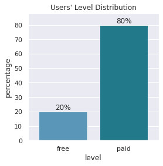
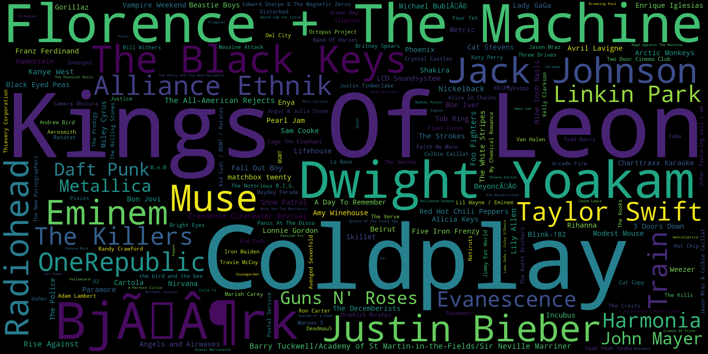
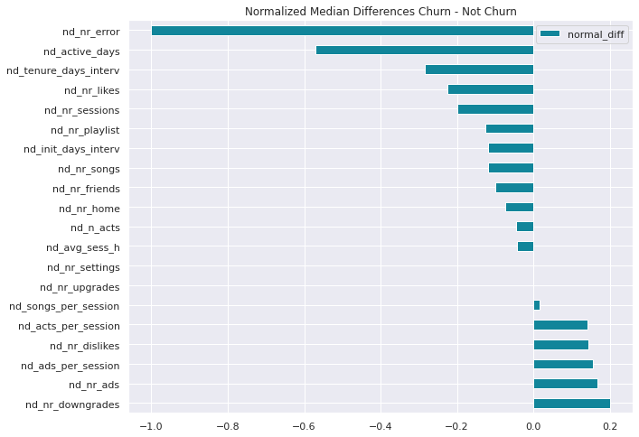

User Activity Based Churn Prediction With PySpark on an AWS-EMR Cluster
Silvia Onofrei
February 12, 2022
- User Activity Based Churn Prediction With PySpark on an AWS-EMR Cluster
- Silvia Onofrei
- February 12, 2022- 1. Problem Overview
- 2. Problem Statement
- 3. Metrics
- 4. Implementation
- 5. Data Exploration
- User information
- Song information
- Log information - 6. Data Cleaning and Preprocessing
- 7. Feature Engineering
- 8. EDA on Engineered Features
- 9. Data Split
- 10. Feature Relevance
- 11. Spot Check Classifiers
- 12. Fine Tune the Best Models
- 13. Model Evaluation and Validation
- 14. Justification
- 15. Reflection
- 16. Improvement
- 17. Ending Matters
1. Problem Overview
The churn rate, also known as the rate of attrition or customer churn, is the rate at which customers stop doing business with an entity, see Investopedia. A high churn rate causes problems to a business as it slows growth and decreases revenue. Churn prediction aims to detect which customers are most likely to leave a service or to cancel a subscription to a service. As the cost of acquiring new customers is higher than the cost of retaining the existing ones, detecting the churn customers and taking the appropriate measures is a critical task for many businesses.
It is imperative to identify the reasons the customers leave a service, and we must keep in mind that these reasons will vary from customer to customer. One of the tasks of a churn prediction algorithm is to identify common reasons for which customers would churn. This knowledge could benefit general marketing strategies which, combined with a personalized approach, will improve customer retention.
A quick internet check for the customer churn topic returns numerous links to blogs and online services that analyze the reasons customer churn happens and how to address it. Here is a link to a blog by Heap, a digital insights platform, that addresses the issue of customer churn.
There are various formulas to calculate the churn, see this Ultimate Guide to Churn Rate for a discussion of four such formulas, which mostly depend on how the number of customers is evaluated. We will adopt a simple way to compute the churn rate as the proportion of churned customers over the period of time the data was collected.
Predicting churn is highly relevant to online subscription platforms:
- it helps businesses to have a better understanding of future expected revenue, and
- it allows to identify those users with higher risk of churn and attempt to prevent them from cancelling the subscription.
2. Problem Statement
In the present project, we are analyzing and predicting churn for a fictional music platform Sparkify. The dataset is made available by the online learning platform Udacity within the Data Scientist Nanodegree. The full dataset is about GB and consists of more than million records; a MB sample dataset with about records is available for local analysis.
To succeed at retaining customers, the Marketing Department at Sparkify must be able to predict which customers are most likely to churn.
With this goal in mind, the user log activity over a period of time is analyzed in order to predict which customers are most likely to cancel their service. This information will allow us to extrapolate on this data to identify future potential churn. The churn customers are identified when they choose the Submit Cancellation page in the service; with denoting churned and as not-churned for the target variable churn.
This is a Supervised Machine Learning problem since we are working with labelled data, and also a binary classification problem as each subscriber will be categorized as churn or not-churn. The approach is offline since the data is static, it was collected over a period of several months and it does not receive new records.
After an initial investigation of the dataset, we aim at creating features that describe best the level of involvement and satisfaction of the customers with the music platform. Some of these features are standard such as: subscription status (free or paid), length of time of the subscription or number of songs played. In addition, other factors, such as involvement in the online community (number of friends) and the level of satisfaction with the songs collection (ThumbsUp or ThumbsDown) are also taken into account when building the model. Our goal is to spot patterns in the way the customers churn. Since we do not have enough information to identify reasons for involuntary churn, we will assume that all the churn we are dealing with is voluntary.
Once the relevant features are identified and engineered, several models are trained in order to determine the ones with the best performance. The classifiers used are: Logistic Regression (LR), Decision Trees (DT), Random Forest (RF), Gradient Bosted Trees (GBT), MultiLayer Perceptron Classifiers (MLPC) and Linear Support Vector Classifier (LSCV). Among these, GBT and MLPC performed the best and they are fine-tuned by running a grid search with -fold cross validation. The best models and their errors are analyzed.
3. Metrics
The acceptable percentage of churn varies greatly among industries, but we expect the dataset to be imbalanced with respect to churn vs. not-churn users; you may find more specific considerations in this article. When data is imbalanced it is better to replace the accuracy score with other binary classification metrics such as: precision, recall and F1-score, the PR (precision - recall) and ROC (receiver operating characteristic) curves and the corresponding areas under curves PR-AUC and ROC-AUC; see this neptuneblog for a great overview.
We use the following notation ( represents churn, is for not-churn):
- tp - number of true positives (1 is predicted as a 1)
- fp - number of false positives (0 is predicted as a 1)
- tn - number of true negatives (0 is predicted as a 0)
- fn - number of false negatives (1 is predicted as a 0)
Accuracy is a measure of how often the classifier is correct, and it is the fraction of correctly labeled users among all the users.
"Considering a user preference towards the minority (positive) class examples, accuracy is not suitable because the impact of the least represented, but more important examples, is reduced when compared to that of the majority class." - Branco, Torgo, Ribeiro (2015).
Precision is a measure of exactness, it is the ratio of correctly identified churn users to all the users that are labeled churn.
Recall (sensitivity, true positive rate) is a measure of completeness, it is the fraction of churn users correctly identified as churn to all the users that churn.
Recall is a relevant metric in our case as we are trying to minimize the number of false negatives, i.e. the users that churn but are not identified as such.
Since the precision and the recall exhibit a trade-off, it is preferable to use the -score which is the harmonic mean of the two:
The -score is more informative on the classifier's performance than its two counterparts. It weights the two metrics (precision and recall) in a balanced way, requiring both to have higher values for the -score to be high.
In addition to the above four metrics we will also compute the ROC-AUC and PR-AUC scores, often used in classification problems with imbalanced sets.
The ROC (receiver operating characteristic) curve is a plot of false positive rate:
on x-axis against the true positive rate (i.e. recall) on the y-axis, at different threshold values. The PR curve is a plot of the recall (on the x-axis) and precision (on the y-axis) for various threshold values. Since these curves do not provide single value performance scores, it is customarily to use AUC, area under the curve, as an evaluation metric which is in fact the average the function values over all possible thresholds. The closer these values are to , the better the classifier performs.
In those cases the dataset is heavily imbalanced and/or we mostly care about the positive class, it is recommended to use -score and PR-AUC metric (see neptuneblog and A. Geron, Chp2, Sect. 4 for further details and considerations).
The ROC-AUC and PR-AUC are implemented in PySpark MLlib library. For convenience and uniform display of the results we built the following:
Given the data characteristics and the nature of the churn prediction problem we will keep our focus on the -score, with the goal of increasing the recall over precision, and on the PR-AUC score.
4. Implementation
The project was implemented on an AWS-EMR cluster, using EMR Jupyter notebooks. To avoid creating very long notebooks, the project is split into three stages: data description, data wrangling and data modeling. Each stage is run on an AWS-EMR cluster which has configuration as described below.
- release label: emr-5.33.1,
- Hadoop distribution: Amazon 2.10.1,
- applications: Spark 2.4.7, Livy 0.7.0, JupyterHub 1.1.0, JupyterEnterpriseGateway 2.1.0,
- 1 master node (m5.xlarge) and 6 core nodes (m5.xlarge).
In order to be able to install the SciPy libraries with the specified versions, I created a virtual environment on the cluster's master node using suggestions from this AWS thread and the following
- bootstrap actions:
emr_bootstrap.shas given below:
#!/bin/bash
python3 -m venv /home/hadoop/path/to/venv
source /home/hadoop/path/to/venv/bin/activate
set -x
python3 -m pip install --upgrade pip
pip3 freeze
pip3 install Cython==0.29.24
pip3 freeze
pip3 install numpy==1.21.2 -v
pip3 freeze
pip3 install pandas==1.3.3 -v
pip3 freeze
pip3 install matplotlib==3.4.3 -v
pip3 freeze
pip3 install seaborn==0.11.2 -v
pip3 freeze
pip3 install sklearn==0.0 -v
pip3 freeze
PYSPARK_PYTHON=/home/hadoop/path/to/venv/bin/python3
The above steps also require to include the following in the first cell of the notebook:
%%configure -f
{"conf": {"spark.pyspark.python":"/home/hadoop/path/to/venv/bin/python3"}}
To ensure that the cluster has enough memory to perform all the tasks, and that it is not terminated prematurely I also adjusted the configuration settings (see this excellent blog for more information), as detailed in the emr_configuration.json file given below:
[{"classification":"spark",
"properties":{
"spark.executor.memory": "8g",
"spark.driver.memory": "24g",
"spark.pyspark.virtualenv.enabled":"true"
}
},
{"classification":"spark-defaults",
"properties":{
"spark.network.timeout":"1500"
}
},
{"classification":"hdfs-site",
"properties":{
"dfs.replication":"2"
}
},
{"classification":"livy-conf",
"properties":{
"livy.server.session.timeout":"12h"
}
},
{"classification":"emrfs-site",
"properties":{
"fs.s3.maxConnections":"100"
}
}]
Each stage of the project was completed in less than the expiration limit of hours for the EMR notebook.
5. Data Exploration
The full dataset contains about millions log records that correspond to users. The sample dataset we used for preliminary investigation and code testing contains almost thousands records for users.
There are features, their data types and brief descriptions are given in the table below.
User information
This group contains information such as userId, firstName and lastName, gender and location.
-
There are unique
user_Idwhich suggests that we have the records of the same number of users. -
Among these users are male while are female, some users did not provide a F/M gender.
-
All the users are from US, they are from states and regions (groups of neighbor states). The distribution of the users among these states is very uneven, with California having the largest number of users.
-
The
userAgentheader is a characteristic string that lets servers and network peers identify the application, operating system, vendor, and/or version of the requesting user agent, for more information see here. -
The
levelcolumn indicates the subscription status of the user (free or paid) and of logs are by subscribed users (and in the sample dataset)
- 
- From the
registrationfeature we learn that the first user in the dataset registered in October and the last user registration was recorded in December .
Song information
- The columns
artist,songandlengthrefer to the songs played by the users from the collection available on the platform. The platform offers a little more that a quarter of millions of songs by artists, a reasonable collection.
- 
Log information
This information refers to the activity of the user on the platform. There are several features that contain technical information on how the users log in:
- The features
method(i.e. HTTP request method),status(i.e. HTTP status code) which is relevant because it points to error (code , which fortunately is quite rare, only of occurrences) andauth(which gives the authorization as Logged In, Logged Out, Cancelled or Guest).
The features that contain actual log information are:
-
The
sessionId,itemInSessionandtsall provide information about a specific session, in particular we can record how many steps a user took on the platform in one session (usingitemInSessionfeature) and determine the time at which these actions were performed (viatswhich stands for timestamp). -
The sessions in the dataset were recorded between October and December . Notice however that the small dataset has logs from March to November .
-
There are about a quarter of million of unique sessions recorded. An interesting fact, as it can be seen from the barplot below: people listen more to music during the work week than over the weekend.
- The
pagefeature contains useful information about user's activity. There are page choices and the great majority is NextSong (more than millions of log records out of the total of about millions of records).
6. Data Cleaning and Preprocessing
Missing values are found in:
- user information (first and last name, gender and location, userAgent),
- song information (artist, song and length of the song).
The full dataset does not have any missing userId records, but the sample dataset is missing about such records.
The following steps were performed for pre-processing for modeling.
Clean data:
- remove the records where
userIdis the empty string; - drop columns not used in the modeling;
- parse the timestamp columns
registrationandtswhich were given in Unix time miliseconds to Unix time seconds.
Preprocess data - create features needed in modeling:
firstevent_ts(timestamp) - first time an user is active,lastevent_ts(timestamp) - last time a user is active,reg_ts(date type) - date from timestamp,reg_date(timestamp) - registration date,init_days_interv(int) - days between registration and first activity,tenure_days_interv(int) - days between registration and last activity,active_days(int) - days the user has some activity on the platform,session_h(float) - session's duration in hours.
7. Feature Engineering
The following new features are build for modeling:
-
nr_songs(int) - total number of songs user listened to, -
nr_likes(int) - total number of Thumbs Up of the user, -
nr_dislikes(int) - total number of Thumbs Down of the user, -
nr_playlist(int) - number of songs added to the playlist, -
nr_friends(int) - number of friends added through Add Friend, -
nr_downgrades(int) - total number of visits to Downgrade page by the user, -
nr_upgrades(int) - total number of visits to Upgrade page by the user, -
nr_home(int) - total number of visits to Home page by the user, -
nr_error(int) - total number of errors encountered by the user, -
nr_settings(int) - total number of visits to Settings page by the user, -
nr_ads(int) - total number of ads the user got, -
nr_sessions(int) - number of sessions of the user, -
n_acts(int) - total number of actions taken by the user, -
avg_sess_h(float) - average session length in hours, -
acts_per_session(float) - average number of actions per session for the user, -
songs_per_session(float) - average numer of songs listened per session by the user, -
ads_per_session(float) - average number of ads per session, received by user, -
init_days_interv(int) - time interval in days from registration to the first action of the user, -
tenure_days_interv(int) - time interval in days from registration to the last action of the user, -
active_days(int) - number of days the user was active on the platform, -
gender(binary) - 1 for F (female), 0 for M (male), -
level(binary) - 1 for paid, 0 for free.
The column churn will be used as label for the model. We will use the Cancellation Confirmation page events to define it, which happen for both paid and free users.
churn(binary) - 1 for "Cancellation Confirmation" page visit, 0 otherwise.
Once these features are created we have a new PySpark dataframe, with one row per user and predictive features ( continuous and discrete), the labels are contained in the churn column.
8. EDA on Engineered Features
At this point we can visualize various distributions based on the churn level. Here are some takeouts from these visualizations:
- There is a higher percentage of churn customers among the free users vs. the paid users, which is expected, as these users did not actually commit to the service. Also, the churn is evenly distributed on genders.
- Clearly, the people who choose to stay with the service listen to more songs than those who churn.

- The churn users receive more ads per session, and this might have created resentment towards the platform and could be considered as a reason to churn.
- The churn users are less engaged, they like fewer songs and tend to downgrade more - none of these is surprising.
- And again, we see that the churn users are less engaged in the platform features and activities, not only by listening to fewer songs but also having shorter saved playlists, fewer friends and fewer visits to the various pages on the platform.
- We also take a look at the differences between the initial days interval (number of days between registration and the first time the user was active on the platform), the number of tenure days and the number of days the user was active on the platform. We notice that the users who did not churn have longer tenure on the platform and more active days than the churn users.
What we learn from the above observations is that the churn customers are less engaged in the platform, they use fewer features and they receive more ads per session. Sparkify's Customer Service could take these observations into account when trying to minimize the number of users who churn. Reducing the number of ads per session is easier than finding ways to engage the users.
It is easy to see from the above plots, that there are numerous outliers in almost every feature. Removing these outliers could improve the performance, but in the same time it has the potential of transforming weak effects into statistically significant ones. On a different note, given that the data reflects users' activity, the outliers could provide useful insight into the preferences of certain groups of users. Hence, we will keep the outliers for now.
9. Data Split
The dataset is highly imbalanced, and in order o ensure that the train set and the test set preserve the classes percentages we perform a stratified split (not available in PySpark as such), and set aside of the data for testing.
10. Feature Relevance
We estimate the feature relevance as the normalized difference between the medians for churn and not churn groups. Here are the results:
- 
We learn from the above plot that there are three features: nr_settings, nr_upgrades and songs_per_session, which are very similar for the two customer groups, and consequently they do not differentiate between the churn and not churn users.
To get more insight in how each of the features would influence our classification task, we also look at the Kendall rank correlation coefficient. This is a correlation measure for the ordinal association between two variables. It is evaluated with the formula (see this blog for full details):
where is the total number of observations. The following heatmap displays the correlations between the pairs of features in the dataset:
There are two types of values we are looking for:
- small correlation ranks with the
churnlabel:
We notice that avg_sess_h and gender have the smallest correlations with churn. These are not exactly the same features we detected using the normalized median difference method, but those three features (nr_settings, nr_upgrades and nr_songs_per_session) still have rather small rank correlation coefficients with churn. The differences can be easily attributed to the different evaluation methods.
- high correlation ranks among pairs of features:
We want to identify strongly correlated pairs of features, as they convey the same information to our model. Although, eliminating the extraneous features might not significantly improve the performance metrics, it will reduce the complexity of the model without sacrificing input information and it will also reduce the computation time.
We notice that nr_songs, nr_playlist and nr_home are highly correlated among each other. We can remove the last two features and keep nr_songs. The nr_likes feature produces clear splits when plotted against the other three features, indicating that churn users tend to like fewer songs, which is not entirely surprising.
Based on this analysis, we will remove the following features before the modeling phase:
nr_playlist,nr_homedue to high correlation withnr_songs,genderandavg_sess_hdue to weak correlation withchurn.
At this point we are ready to move on to the next stage: modeling.
11. Spot Check Classifiers
The Baseline Model
It is customary to build a basic (no-skill) model that cannot discriminate between the classes and has the lowest accuracy score a model should achieve on the dataset, see this blog for more insight into baseline models for classification. We build a ZeroR model, which always predicts the most numerous class (in our case the non-churn class); see this video for a discussion of this model. Notice that in this case the precision and thus -score become undefined due to zero denominators.
The accuracy of the ZeroR model is computed on the test set as follows:
Any classifier we build must have accuracy on the test set greater that .
We could also consider a more complex weak learner, such as the Decision Trees (DT), as a benchmark model, as we are able to evaluate the two metrics of interest -score and PR-AUC.
The Classifiers
The following binary classifiers are trained with PySpark default parameters
and -fold cross validation on the train set.
Logistic regression (LR) is a popular method to predict a binary categorical response using a logistic sigmoid function, which receives as input a vector of features (predictors).
Decision Tree (DT) is an algorithm that recursively partitions the feature space in such a way that each region has separate parameters. Each partition is chosen greedily by selecting the best split from a set of possible splits, with the goal of maximizing the information gain at each tree node, see Spark Documentation.
Random Forest (RF) combines numerous decision trees with the goal of reducing overfitting. A number of decision trees are build on bootstrapped training samples. Each time a split in a tree is considered, a random sample of predictors is chosen as split candidates from the full set of predictors, see An Introduction to Statistical Learning (Chp. 8).
Gradient Boosted Trees (GBT), uses Decision Trees as its base predictors and sequentially adds predictors to the ensemble, each one correcting its predecessor, by fitting the new predictor to the residual errors made by the previous predictors, see A. Geron (Chp. 7).
Multilayer Perceptron Classifier (MLPC) is a class of feedforward artificial networks. It consists of three types of layers: the input layer, the hidden layers and the output layer. Each layer is fully connected to the next layer in the network. Nodes in the input layer represent the input data, the number of input nodes should equal the number of features. The number of nodes in the output layer corresponds to the number of classes. For details on the PySpark implementation see MLlib: Main Guide.
Linear Support Vector Machine (LSVC) constructs hyperplanes in the high dimensional features space. The best separation is achieved by the hyperplane that has the largest distance to the nearest training-data points of any class, a good presentation of this algorithm can be found in A. Geron (Chp. 5).
The Pipeline
We create a pipeline that combines all data processing steps and the classifier as the last stage:
- the features are split into categorical and continuous,
- the predicted variable is identified,
StringIndexerencodes the predicted variable for modeling,VectorAssembleris a transformer that combines a list of columns into a single column vector,StandardScalerstandardizes the continuous features by removing the mean and scale them to unit variance using column summary statistics on the samples in the training set.
The First Results
For each of the classifiers discussed above we use -Fold Cross Validation, to obtain the following performance metrics on the training set:
| metric | LR | DT | RF | GBT | MLPC | LSVC |
|---|---|---|---|---|---|---|
| accuracy | 0.869 | 0.884 | 0.872 | 0.906 | 0.873 | 0.872 |
| precision | 0.760 | 0.853 | 0.845 | 0.871 | 0.679 | 0.770 |
| recall | 0.611 | 0.584 | 0.527 | 0.680 | 0.824 | 0.615 |
| f1_score | 0.677 | 0.693 | 0.649 | 0.764 | 0.744 | 0.683 |
| auc_roc | 0.891 | 0.621 | 0.900 | 0.934 | 0.926 | 0.888 |
| auc_pr | 0.764 | 0.540 | 0.788 | 0.867 | 0.848 | 0.765 |
Recall that the main metrics of interest in this analysis are the -score (in particular the recall) and the PR-AUC.
We notice that the DT classifier has the weakest performance, which is to be expected as it is the weakest learner among these algorithms. The large values DT has for accuracy and precision are mostly due to the high data imbalance.
The trees ensemble algorithms RF and GBT perform much better. The LR and LSVC have mediocre similar performances.
The best performance is attained by the GBT model on almost all the metrics. The downside is, that due to its complexity, the model is very slow to train. The values attained by the MLPC model are close to the best performer's. Note that MLPC has a recall of as compared to GBT's recall of , which indicates the MLPC is better in predicting the relevant results. Of course, we see that the corresponding accuracies are in opposite relation, which in the end balance the -scores.
We will fine tune both MLPC and GBT in the next stage and then evaluate them on the test set to see how they generalize.
12. Fine Tune the Best Models
Fine Tune Multilayer Perceptron Classifier (MLPC)
We work with a MLPC that has layers . The input layer contains nodes (same as the number of predicting features) and the output layer has nodes since we are dealing with binary classification. There are two hidden layers with and nodes each. The combinations of hyperparameters that were trained is given below:
The models were trained via -fold cross validation in about minutes. The best hyperparameters found for MLPC are: , and .
Fine Tune Gradient Boosted Trees (GBT)
The GBT model is by far the slowest model among the ones mentioned here. Because of this inconvenience, we restricted the number of models to train, the parameter grid is given below:
Even so, with only models, and with -fold cross validation, it took the cluster minutes to train. The best results were obtained for: and .
13. Model Evaluation and Validation
We reach the final stage in our analysis. The two best classifers' hyperparameters are tuned and the models' predictions on the test set (unseen data) are collected.
We first take a look at the raw predictions of the two models, the confusion matrix data. The test set contains data points.
| label | pred | -- | GBT | -- | MLPC |
|---|---|---|---|---|---|
| 1 | 1 | -- | tp = 989 | -- | tp = 1224 |
| 0 | 1 | -- | fp = 422 | -- | fp = 598 |
| 1 | 0 | -- | fn = 484 | -- | fn = 249 |
| 0 | 0 | -- | tn = 4661 | -- | tn = 4485 |
We notice that MLPC identifies users as churn, and mislabels users, while missing of the churn users. The GBT model, on the other side misses users, which is more users than the MLPC model. Overall, the MLPC model has the tendency to label users as churn even if the user is not-churn, while the GBT model tends to miss the churn users more often.
The test set specific metrics for the two models are given below:
| model | accuracy | precision | recall | f1_score | auc_roc | auc_pr |
|---|---|---|---|---|---|---|
| GBT | 0.862 | 0.701 | 0.671 | 0.686 | 0.892 | 0.780 |
| MLPC | 0.871 | 0.672 | 0.831 | 0.743 | 0.930 | 0.841 |
We can see from this table, that the overall scores of the MLPC model are better than of the GBT model. The MLPC model has a much better recall than the GBT model, while the latter has a better precision. But this is exactly what we observed while analyzing the confusion matrix information.
A look at the ROC and PR curves confirms that the MLPC model performs better than the GBT when averaging over various thresholds:
In conclusion, the Multilayer Perceptron Classifier is found to be the best model for this problem. Although it has the tendency to label more users as churn, this is preferable over an algorithm which tends to miss the unhappy customers.
14. Justification
An algorithm to detect the churn among the users of a fictional online music platform Sparkify was implemented. A mini sample of the data was initially analyzed in detail to gain understanding of the features and their properties. The analysis helped in engineering about new features for the model. These new features describe in detail users' activity on the platform, while information on location, user's web browser and music genre preferences was not included.
A new dataset was build, in such a way that each row contains information for a particular user. Exploratory Data Analysis was performed on this new dataset. Several binary classification models were fitted on the train set via -fold cross validation. The two best performing models were fine tuned with Grid Search and evaluated on the test set.
For this project, I choose to work in PySpark and use only the classifiers that are available in its machine learning library MLlib. The visualizations were performed in Matplotlib and using Pandas. The work was done in Jupyter notebooks, both on a local machine and in AWS-EMR clusters.
15. Reflection
Churn detection and prediction is an interesting project, with great relevance to many businesses, and in particular online platforms. The datasets I worked with were very well chosen and relevant to the analysis.
- Cleaning and preprocessing data was an easy task as data is pretty clean to begin with.
- The most interesting part was to gain understanding of the data in order to engineer new features that are relevant to the analysis.
- I encountered numerous difficulties while configuring the AWS-EMR cluster, in installing specific versions of the Python libraries Pandas, Matplotlib and especially Seaborn. After extensive research, I found the solution via creating a virtual environment on the cluster's master node.
- The most time consuming part was to train the Gradient Boosted Trees Classifier. I changed the cluster configuration to increase its memory and to extend the default timeout to h. I also restricted the number of hyperparameters for the grid search for this algorithm.
16. Improvement
There are several ways the approach could be changed to improve the performance of the classifier:
- Include in the analysis some of the features I omitted in the first place, such as geographical location of the user, or songs and artist preferences.
- Examine the outliers in the features dataset, possibly remove the most extreme ones and treat the remaining outliers as hyperparameters for the model.
- Combine the above classifiers via stacking and make predictions using a meta-classifier.
- Use more performant classifiers such as XGBoost or LightGBM that are not implemented in PySpark MLlib library.
17. Ending Matters
The Jupyter notebooks and all the code for this project can be found in this Github repository. An extensive list of references is also included therein.
I would like to thank Udacity for suggesting this project and for providing the datasets. I am also grateful to the anonymous reviewer whose suggestions greatly improved the project.
I intend to follow with a second post in which I describe how I implemented a stacked algorithm to improve the outcome of this analysis.